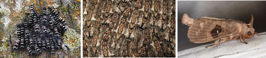
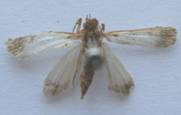

PESTS OF MORINGA :: MAJOR PESTS :: HAIRY CATERPILLARS
4. Hairy caterpillars
a. Eupterote mollifera (Eupterotidae: Lepidoptera)
Distribution and status: Destructive and specific pest of drumstick in South India.
Damage symptoms :
Caterpillars feed gregariously by scrapping bark and gnawing foliage. Severe infestation results in complete defoliation of the tree.
Bionomics :
Adults are large-sized moths with light yellowish-brown wings having faint lines. Moths appear with onset of monsoon and lay eggs in clusters on leaves and tender stems. Egg period lasts for 6 days. Full-grown caterpillars are brownish in colour and densely hairy. Hairs are irritating to touch. Larval and pupal periods last for 12 to 14 and 8 to 10 weeks respectively. Pupation takes place in soil. Only one generation/year.
Management
- Collect and destroy egg masses and caterpillars
- Use light traps to attract and kill adults immediately after rains
- Use burning torch to kill congregating larvae on the trunk
- Spray chlorpyriphos 20 EC or quinalphos 25 EC or endosulfan 35 EC 1.0 L in 500 -750 L of water per ha or fish oil rosin soap 25 g/L on the trunks and foliage, immediately after rain and 15 days later
b. Pericallia ricini (Arctiidae: Lepidoptera)
Attacks drumstick, banana, black gram, cotton, cucurbits, castor, cowpea, soybean, tea and yam.
For more information refer castor
c. Metanastria hyrtaca (Lasiocampidae: Lepidoptera)
Distribution and status: Generally called as gristly citrus caterpillar and found all over the Indian sub-continent.
Host range: Polyphagous pest and prefers several Citrus species.
Damage symptoms
Caterpillars are nocturnal in habit and feed gregariously and voraciously. During day, they remain crowded on shady side of tree trunks.
Bionomics :
|  | ||
Metanastria hyrtaca - Early instar |
Metanastria hyrtaca - Late instar |
Metanastria hyrtaca - Adult |
Eggs are spherical in shape and pale white in colour. Full-grown caterpillars are cylindrical in shape, greyish-brown in colour, stout and hairy. Stout, greyish-brown moths adults exhibit sexual dimorphism. Male moths have pectinate antennae and chocolate- brown patch in the middle of forewings. Incubation, larval and pupal periods last for 9 to 12, 45 to 100 and 9 to 18 days respectively. Life cycle is completed in 75 to 110 days.
d. Streblote (Taragama) siva (Lasiocampidae: Lepidoptera)
Distribution and status: Found all over the Indian sub continent
Host range: Drumstick, rose (preferred host)
|  |
Streblote |
Bionomics : Full-grown caterpillars are pale ochreous–brown in colour with small black spots and long lateral tufts of ochreous hair. Moth has greyish-white head and thorax and whitish abdomen. Fore wings are beautifully coloured with reddish-brown spot ringed with white. Hind wings are white with slight fuscous on outer margin.
IPM for hairy caterpillars
- Collect and destroy caterpillars from the plants
- Use light traps to attract and kill adults
- Spray carbaryl 1.0 kg or malathion 50 EC or endosulfan 35 EC 1.0 L in 500 -750 L of water per ha